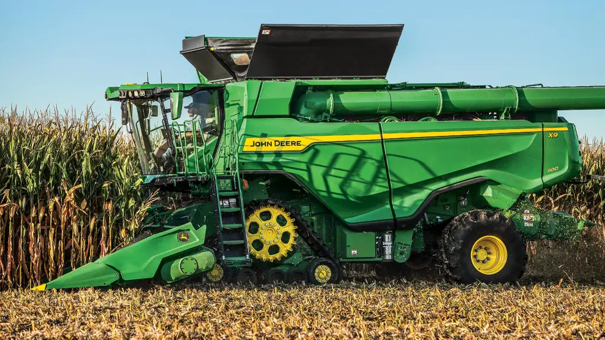
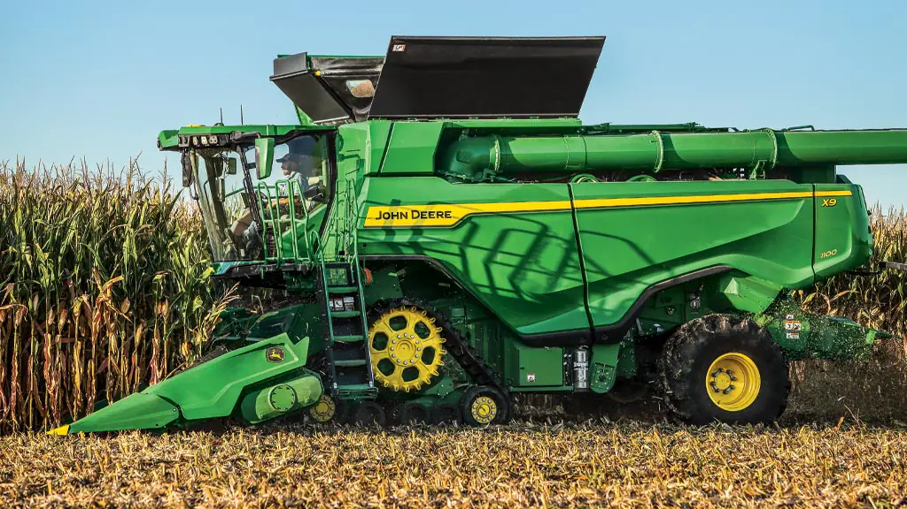
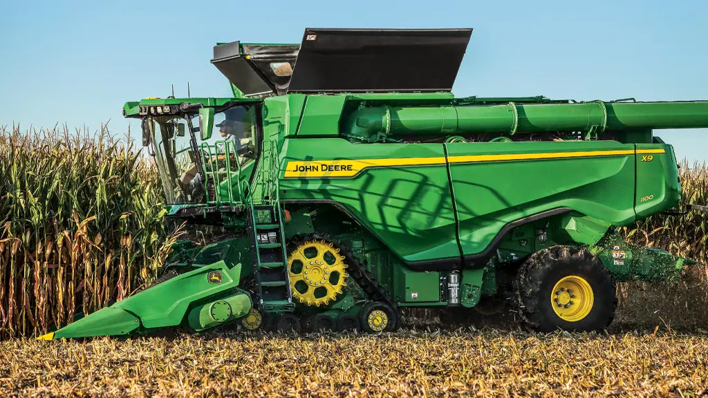

As melhores colheitadeiras no mercado:

 



A Agricultura de Precisão é um sistema de gerenciamento agrícola que utiliza tecnologias em diversas etapas do manejo para aumentar a eficiência no uso de insumos agrícolas. Ela tem como premissa a adequação do manejo da lavoura, levando em consideração a sua variabilidade espacial1. O objetivo da Agricultura de Precisão é aumentar o retorno econômico ao agricultor, a sustentabilidade e minimizar o efeito ao ambiente. Ela estuda as condições do terreno, proporcionando um cuidado balanceado de acordo com as características do solo e da espécie cultivada
